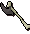

")
Kampf-Dreieck und Taktiken
Einführung
![[Bild]](../../img/main/kbase/misc/combat_triangle.gif) Irgendwann kommt im Leben eines jungen Abenteurers die Zeit, das vertraute Nest zu verlassen und seinen eigenen Weg zu beschreiten. Dann heißt es, Abenteuer abzubrechen, seiner Höllenkatze adieu zu sagen und sich auf die Reise gen Norden zu den Clankämpfen in der Wildnis, nach Westen zum Burgenkampf und den Kampfgruben der TzHaar oder in südliche Gefilde zur Duell-Arena von Al-Kharid zu begeben - und die besonders Waghalsigen machen sich auf in die gefährlichen Spielerkampf- und Wildnis-Welten. Dort warten andere Abenteurer geduldig mit einer großen Keule und einem blutrünstigen Grinsen darauf, die 'Küken' in die komplexe Kunst der Spielerkämpfe einzuweihen.
Irgendwann kommt im Leben eines jungen Abenteurers die Zeit, das vertraute Nest zu verlassen und seinen eigenen Weg zu beschreiten. Dann heißt es, Abenteuer abzubrechen, seiner Höllenkatze adieu zu sagen und sich auf die Reise gen Norden zu den Clankämpfen in der Wildnis, nach Westen zum Burgenkampf und den Kampfgruben der TzHaar oder in südliche Gefilde zur Duell-Arena von Al-Kharid zu begeben - und die besonders Waghalsigen machen sich auf in die gefährlichen Spielerkampf- und Wildnis-Welten. Dort warten andere Abenteurer geduldig mit einer großen Keule und einem blutrünstigen Grinsen darauf, die 'Küken' in die komplexe Kunst der Spielerkämpfe einzuweihen. Aus diesem Grund ist es sehr weise, sich vor der ersten Reise zu Spielerkämpfen (mit einer Zunderbüchse und einem Mittagessen im Gepäck, voller Erwartung, neue Freunde kennenzulernen), mit ein paar Strategien vertraut zu machen.
Bei seinen Reisen in der Wildnis wird man feststellen, dass man die meisten anderen Spieler in drei Kategorien einteilen kann: Nahkämpfer, Fernkämpfer und Magier - aus welchen das Kampf-Dreieck besteht. Jede Ecke des Dreiecks hat einen Vorteil und einen Nachteil gegen eine andere Ecke (ähnlich wie bei dem Spiel 'Stein-Schere-Papier').
Nahkämpfer
![[Bild]](../../img/main/kbase/misc/generic_fighter.gif) Vorteile - Für diejenigen von euch, die ihren Gegnern lieber direkt gegenüberstehen, ist der Nahkampf die bevorzugte Kampfmethode. Dabei werden meist große Waffen und schweres Rüstzeug benutzt, im Gegensatz zum Fernkampf und der Magie, bei denen leichtes Rüstzeug und schnelle Waffen bevorzugt werden. Im Nahkampf sieht man nicht nur eindrucksvoll aus, sondern hat Fernkämpfern gegenüber einen großen Vorteil. Die schweren Rüstungen können nur schwer von Pfeilen und Bolzen durchdrungen werden, sodass dem Träger nicht viel Schaden zugefügt wird und er sich somit dem Gegner getrost nähern kann, um dann richtig viel Schaden zu verursachen.
Vorteile - Für diejenigen von euch, die ihren Gegnern lieber direkt gegenüberstehen, ist der Nahkampf die bevorzugte Kampfmethode. Dabei werden meist große Waffen und schweres Rüstzeug benutzt, im Gegensatz zum Fernkampf und der Magie, bei denen leichtes Rüstzeug und schnelle Waffen bevorzugt werden. Im Nahkampf sieht man nicht nur eindrucksvoll aus, sondern hat Fernkämpfern gegenüber einen großen Vorteil. Die schweren Rüstungen können nur schwer von Pfeilen und Bolzen durchdrungen werden, sodass dem Träger nicht viel Schaden zugefügt wird und er sich somit dem Gegner getrost nähern kann, um dann richtig viel Schaden zu verursachen. Nachteile - Anders sieht es aber beim Kampf gegen Magier aus. Das starke Rüstzeug wehrt zwar Nahkampfwaffen und Fernkampf-Geschosse sehr gut ab, wirkt aber bei magischen Sprüchen wie eine elektrische Leitung, sodass dem Träger sehr viel Schaden zugefügt wird. Außerdem können begabte Magier ihre Gegner betäuben beziehungsweise verwurzeln, sodass sie sich nicht mehr bewegen können, während der Magier in Ruhe seine Sprüche aus der Entfernung wirken kann. Magier sind die Erzfeinde der Nahkämpfer, also sollte eine direkte Auseinandersetzung mit ihnen gemieden werden.
Magier
![[Bild]](../../img/main/kbase/misc/generic_mage.gif) Vorteile - Magier sehen auf den ersten Blick wie ein einfach zu besiegendes Ziel aus, da sie Rüstzeug tragen, das wie ein glorifizierter Bademantel aussieht. Unter dieser Kleidung steckt aber ein ernst zu nehmender Gegner. Durch die Kombination von 'Halte'-Zaubern und der magischen Leitfähigkeit der meisten Metallrüstungen können sie Nahkämpfer sehr leicht ausschalten.
Vorteile - Magier sehen auf den ersten Blick wie ein einfach zu besiegendes Ziel aus, da sie Rüstzeug tragen, das wie ein glorifizierter Bademantel aussieht. Unter dieser Kleidung steckt aber ein ernst zu nehmender Gegner. Durch die Kombination von 'Halte'-Zaubern und der magischen Leitfähigkeit der meisten Metallrüstungen können sie Nahkämpfer sehr leicht ausschalten. Nachteile - Die im letzten Abschnitt erwähnte Kleidung, also die Roben und Umhänge der Magier, machen sie zu einem beliebten Ziel für Fernkämpfer. Da das Magier-Rüstzeug fast keinen Schutz gegen Fernkampfangriffe verleiht, wirken sie auf Fernkämpfer wie herumlaufende Nadelkissen und ihre Haltezauber sorgen nur dafür, dass Fernkämpfer aus der Entfernung angreifen.
Fernkämpfer
![[Bild]](../../img/main/kbase/misc/generic_ranger.gif) Vorteile - Da Fernkämpfer meist relativ leichtes und flexibles Rüstzeug tragen, können sie dessen Nachteil gegenüber physischen Angriffen mit einem akzeptablen Widerstand gegen magische Attacken wettmachen. Fernkämpfer sind also gegen Magier sehr effektiv, da sie nicht nur gute Abwehr gegen Zaubersprüche besitzen, sondern auch aus weiter Entfernung angreifen können.
Vorteile - Da Fernkämpfer meist relativ leichtes und flexibles Rüstzeug tragen, können sie dessen Nachteil gegenüber physischen Angriffen mit einem akzeptablen Widerstand gegen magische Attacken wettmachen. Fernkämpfer sind also gegen Magier sehr effektiv, da sie nicht nur gute Abwehr gegen Zaubersprüche besitzen, sondern auch aus weiter Entfernung angreifen können. Nachteile - Um eine formidable Bewegungsfreiheit zu garantieren, opfern Fernkämpfer einen guten Schutz gegen Nahkampfattacken. Einem talentierten Nahkämpfer ist es somit möglich, Angriffe auf die kaum geschützten Körperteile des Fernkämpfers auszuführen, wenn es ihnen gelingt, den Fernkämpfer in ein Handgemenge zu verwickeln.
Andere Faktoren
Das Kampf-Dreieck macht den Großteil der Spielerkämpfe aus. Das heißt allerdings nicht, dass dabei nicht noch andere Faktoren eine Rolle spielen. Wie ihr euch bestimmt denken könnt, gibt es eine Vielzahl an Unbekannten, die eine Auswirkung auf das Ergebnis des Kampfs haben.
Rüstzeug
![[Bild]](../../img/main/kbase/armour/melee/rune_plate.gif)
Waffen

![[Bild]](../../img/main/kbase/weapons/melee/abyssalwhip2.gif) Viele Kontrahenten nehmen zwei verschiedene Waffen mit in die Wildnis, um ihren verursachten Schaden zu maximieren. Vor allem Nahkämpfer haben meist eine starke Waffe und eine mit Gift versehen Waffe bei sich, um ihre Gegner zuerst zu vergiften und dann zusätzlich noch hohen Schaden anzurichten.
Viele Kontrahenten nehmen zwei verschiedene Waffen mit in die Wildnis, um ihren verursachten Schaden zu maximieren. Vor allem Nahkämpfer haben meist eine starke Waffe und eine mit Gift versehen Waffe bei sich, um ihre Gegner zuerst zu vergiften und dann zusätzlich noch hohen Schaden anzurichten. Schmuckstücke
![[Bild]](../../img/main/kbase/items/rings/diaring.gif)
![[Bild]](../../img/main/kbase/items/amulets/glory_amulet1.gif) Amulette, Ringe und andere Schmuckstücke verleihen ihrem Träger oft einen Bonus auf Angriff und Verteidigung. Dabei handelt es sich meistens um kleine Boni, obwohl sie auch spezielle Eigenschaften besitzen, wie beispielsweise der Ring des Rückschlags, der dem Kontrahenten Schaden zufügt, wenn er euch trifft.
Amulette, Ringe und andere Schmuckstücke verleihen ihrem Träger oft einen Bonus auf Angriff und Verteidigung. Dabei handelt es sich meistens um kleine Boni, obwohl sie auch spezielle Eigenschaften besitzen, wie beispielsweise der Ring des Rückschlags, der dem Kontrahenten Schaden zufügt, wenn er euch trifft. Fertigkeiten
Tränke
![[Bild]](../../img/main/kbase/items/potions/other_potions/superattack_potion.gif)
![[Bild]](../../img/main/kbase/items/potions/other_potions/superstrength_potion.gif) Tränke beeinflussen die Kampfstufe des Benutzers nicht, verbessern aber trotzdem ihre offensiven und defensiven Fähigkeiten und teilweise auch ihren Zustand.
Tränke beeinflussen die Kampfstufe des Benutzers nicht, verbessern aber trotzdem ihre offensiven und defensiven Fähigkeiten und teilweise auch ihren Zustand. Wenn ihr kein Mitglied seid, könnt ihr trotzdem Stärketränke benutzen, die euch im Kampf einen Vorteil verschaffen.
Gebete
![[Bild]](../../img/main/kbase/skills/prayer/swizzle_sticks/prayer22.gif)
Nahrungsmittel
![[Bild]](../../img/main/kbase/items/food/fish/shark1a.gif)
![[Bild]](../../img/main/kbase/items/food/fish/mantaray.gif) Man sollte schon mehr als nur ein Butterbrot mitnehmen, wenn man sich in Spielerkämpfe involvieren möchte, denn mit Nahrungsmitteln kann man während eines Kampfs oder danach seine Trefferpunkte regenerieren. Man sollte eine entsprechend große Menge mitnehmen. Besonders zu empfehlen sind dabei beispielsweise die größeren Fische.
Man sollte schon mehr als nur ein Butterbrot mitnehmen, wenn man sich in Spielerkämpfe involvieren möchte, denn mit Nahrungsmitteln kann man während eines Kampfs oder danach seine Trefferpunkte regenerieren. Man sollte eine entsprechend große Menge mitnehmen. Besonders zu empfehlen sind dabei beispielsweise die größeren Fische. Niemand von euch kannte Ichabod so, wie er es sich gewünscht hätte, und Ichabod hätte es sicher nicht gefallen, wie viele von euch sich an ihn erinnern werden. Er glaubte immer, etwas Besonderes in sich zu haben und nichts konnte ihn von diesem Glauben abbringen. Seiner Meinung nach wurde er nur geboren, um sich mit anderen zu messen. Schon als Kind lief er mit einem Topf auf seinem Kopf in der Gegend herum und spießte Ratten auf. Meine Versuche, ihn in die Fußstapfen seines Pappis zu führen, waren erfolglos, denn die Landwirtschaft faszinierte ihn gar nicht. Er wollte einfach nichts dazulernen. Immer öfter besuchte er den Rand der Wildnis. Ich wollte nicht die Schande erleben, meinen Sohn als kriegerischen Antagonisten zu erleben, also bekam er immer weniger Taschengeld von mir. Er erzählte andauernd irgendwelchen Unsinn über ein Kampf-Dreieck - dass er es bezwingen würde... Der Rest ist euch allen bekannt... Dann begab er sich auf den Marktplatz von Varrock und behauptete, seine Theorie zu beweisen und zog sich einen Sack über, der ihm als Magier-Rüstzeug dienen sollte. Mit einem mir unheimlichen Leuchten in den Augen zog er in die Wildnis. Ich folgte ihm so schnell es ging, aber es gelang mir nicht, ihn einzuholen. Den nächsten Morgen hat mein Junge leider nicht mehr erlebt... Und so begraben wir dich nun hier, Ichabod, du Narr! Vielleicht lernst du wenigstens davon etwas... Pappi Russ, in seiner Lobrede zum Begräbnis von Ichabod |

Weitere Artikel in Kampf
|
|
|
Weiterführende Informationen Wenn euch dieser Artikel nicht weitergeholfen hat, könnt ihr in den folgenden Kapiteln der RuneScape-Webseite mehr Informationen finden:
|
|